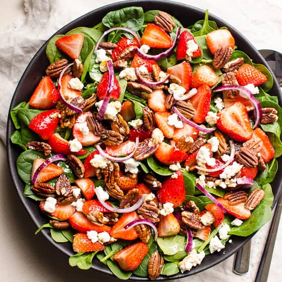

Strawberry Spinach Salad
Ingredients:
- 4 cups fresh spinach leaves, washed and dried
- 1 cup sliced strawberries
- 1/2 cup sliced almonds
- 1/4 cup crumbled feta cheese
- 1/4 cup balsamic vinaigrette dressing
Instructions:
- In a large bowl, combine spinach, sliced strawberries, sliced almonds, and crumbled feta cheese.
- Drizzle balsamic vinaigrette dressing over the salad and toss gently to coat evenly.
- Serve immediately as a refreshing and nutritious salad option.